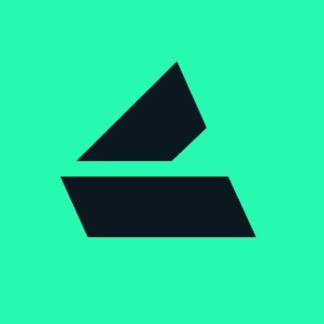

Lyra
Blockchain, DeFi
Value: $100
Lyra is a comprehensive ecosystem that includes a Chain, Protocol, Exchange, and Wallet, designed to facilitate capital-efficient and composable perpetual and options trading on ERC-20 tokens.
Lyra is airdropping free LDX to celebrate the launch of their new protocol. The team is also migrating from their old token to a new token called “LDX.” This airdrop is for traders, yield farmers, and the participants will be rewarded with free points for trading, depositing and inviting friends.
Step-by-Step Guide:
1. Visit the Lyra website.
2. Sign in with your email, Google account, or wallet.
3. To start earning points, you should enter our code “QUEPK” and deposit at least $25.
4. Now you can earn free points for trading, depositing, and inviting friends.
5. You can also earn LDX by holding LYRA.
6. Firstly, you can earn 250 points per $1 fee paid on options and perps trades.
7. Secondly, you can earn 1 point per $100 deposited to Lyra per hour.
8. Thirdly, you can refer people to earn 20% of your invitee points and 10% of their invitee points.
9. Also, the more points you earn, the more levels you unlock. Higher levels will fetch you an additional LDX bonus.
10. Pre-snapshot LYRA stakers will receive a separate allocation of the LDX airdrop.
11. LDX is the new utility token of the Lyra Derivatives Network.
12. LDX will be airdropped to farmers and traders in Q3 2024.
13. In addition, existing LYRA holders will be migrated 1:1 to LDX with the same total supply.
For more details about the airdrop, visit this official airdrop announcement.
Lyra is airdropping free LDX to celebrate the launch of their new protocol. The team is also migrating from their old token to a new token called “LDX.” This airdrop is for traders, yield farmers, and the participants will be rewarded with free points for trading, depositing and inviting friends.
Step-by-Step Guide:
1. Visit the Lyra website.
2. Sign in with your email, Google account, or wallet.
3. To start earning points, you should enter our code “QUEPK” and deposit at least $25.
4. Now you can earn free points for trading, depositing, and inviting friends.
5. You can also earn LDX by holding LYRA.
6. Firstly, you can earn 250 points per $1 fee paid on options and perps trades.
7. Secondly, you can earn 1 point per $100 deposited to Lyra per hour.
8. Thirdly, you can refer people to earn 20% of your invitee points and 10% of their invitee points.
9. Also, the more points you earn, the more levels you unlock. Higher levels will fetch you an additional LDX bonus.
10. Pre-snapshot LYRA stakers will receive a separate allocation of the LDX airdrop.
11. LDX is the new utility token of the Lyra Derivatives Network.
12. LDX will be airdropped to farmers and traders in Q3 2024.
13. In addition, existing LYRA holders will be migrated 1:1 to LDX with the same total supply.
For more details about the airdrop, visit this official airdrop announcement.
HOT